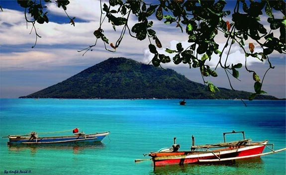
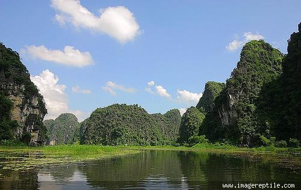
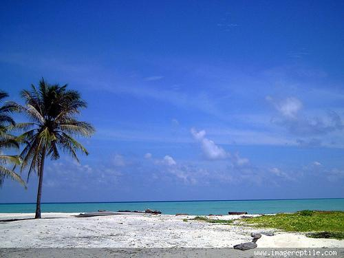
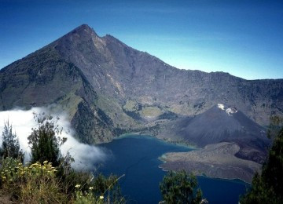
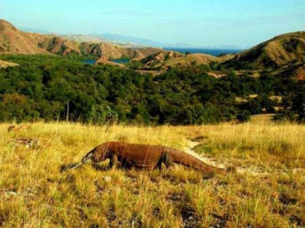
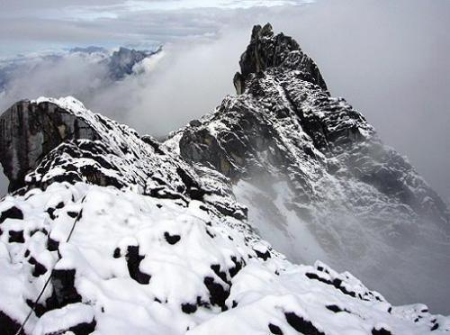

Home
Latest News
Recommended
About
Contact
 Kepulauan Raja Ampat
Kepulauan Raja AmpatKepulauan Raja Ampat merupakan kepulauan yang berada di barat pulau Papua di provinsi Papua Barat, tepatnya di bagian kepala burung Papua. Kepulauan ini merupakan tujuan penyelam-penyelam yang tertarik akan keindahan pemandangan bawah lautnya.  Taman Laut Bunaken
Taman laut Bunaken memiliki 20 titik penyelaman (dive spot) dengan kedalaman bervariasi hingga 1.344 meter. Dari 20 titik selam itu, 12 titik selam di antaranya berada di sekitar Pulau Bunaken. Dua belas titik penyelaman inilah yang paling kerap dikunjungi penyelam dan pecinta keindahan pemandangan bawah laut.
 Pantai Maluk
Pantai MalukPantai ini begitu indah dan mempesona siapa saja ingin segera berenang dan berjemur saat cuaca sedang cerah. Matahari memancarkan sinarnya dan ombak bergulung–gulung, silih berganti menuju tepi pantai.
 Green Canyon
Green CanyonGreen Canyon menyimpan pesona luar biasa. Perpaduan antara sungai, lembah hijau, hutan lindung, dan aneka stalaktit-stalakmit. Keindahan berbalut kesunyian, bagai surga yang tersembunyi. Green Canyon mulai dikembangkan pada tahun 1989.  Pegunungan Karst Bantimurung
Taman Nasional Bantimurung mempunyai pemandangan alam yang paling indah. Karena di taman nasional ini, terdapat sumber air yang tidak pernah kering. Sehingga berbagai jenis tanaman dapat bertahan di saat musim kemarau yang panjang.  Pulau Derawan
Di perairan sekitarnya terdapat taman laut dan terkenal sebagai wisata selam (diving) dengan kedalaman sekitar lima meter. Pada batu karang di kedalaman sepuluh meter, terdapat karang yang dikenal sebagai “Blue Trigger Wall”.  Gunung Rinjani
Rinjani memiliki panaroma yang bisa dibilang paling bagus di antara gunung-gunung di Indonesia. Setiap tahunnya (Juni-Agustus) banyak dikunjungi pencinta alam mulai dari penduduk lokal, sampai mahasiswa pecinta alam. Suhu udara rata-rata sekitar 20°C; terendah 12°C. Angin kencang di puncak biasa terjadi di bulan Agustus.  Pulau Komodo
Taman Nasional Komodo (TN. Komodo) merupakan kawasan yang terdiri dari beberapa pulau dengan perairan lautnya. Pulau-pulau tersebut merupakan habitat satwa komodo (Varanus komodoensis) yaitu reptil purba yang tersisa di bumi. Kondisi alamnya unik, terdapat padang savana yang luas dengan pohon lontarnya (Borassus flabellifer).
 Kawah Ijen
Kawah IjenKawah Ijen merupakan salah satu gunung berapi atraksi wisata di Indonesia. Kawah Ijen merupakan objek wisata terkenal, yang telah dikenal oleh para wisatawan domestik dan asing karena keindahan alam dan bahari.  Carstensz Pyramid
Indonesia patut berbangga dengan keunikan dan kekayaan alam serta tradisi masayarakatnya. Kali ini, Carstenz Pyramid atau yang bisa disebut dengan puncak jaya, juga berada di Papua. Puncak Carstensz ini merupakan puncak tertinggi di Australia dan Oceania.
 Gunung Anak Krakatau
Gunung Anak KrakatauKrakatau adalah kepulauan vulkanik yang masih aktif dan berada di Selat Sunda antara pulau Jawa dan Sumatra. Nama ini pernah disematkan pada satu puncak gunung berapi di sana yang karena letusan pada tanggal 26-27 Agustus 1883, kemudian sirna. Letusannya sangat dahsyat dan tsunami yang diakibatkannya menewaskan sekitar 36.000 jiwa.
 Gunung Bromo
Gunung BromoGunung Bromo merupakan gunung berapi yang masih aktif dan paling terkenal sebagai obyek wisata di Jawa Timur. Sebagai sebuah obyek wisata, Gunung Bromo menjadi menarik karena statusnya sebagai gunung berapi yang masih aktif.
 Gunung Kelimutu
Gunung KelimutuGunung Kelimutu adalah gunung berapi yang terletak di Pulau Flores, Provinsi NTT, Indonesia. Lokasi gunung ini tepatnya di Desa pemo Kecamatan kelimutu, Kabupaten Ende. Gunung ini memiliki tiga buah danau kawah di puncaknya. Danau ini dikenal dengan nama Danau Tiga Warna karena memiliki tiga warna yang berbeda, yaitu merah, biru, dan putih. Walaupun begitu, warna-warna tersebut selalu berubah-ubah seiring dengan perjalanan waktu.
 Danau Toba
Danau TobaDanau Toba adalah sebuah danau vulkanik dengan ukuran panjang 100 kilometer dan lebar 30 kilometer (danau vulkanik terbesar di dunia). Di tengah danau ini terdapat sebuah pulau vulkanik bernama Pulau Samosir. Danau Toba sejak lama menjadi daerah tujuan wisata penting di Sumatera Utara selain Bukit Lawang dan Nias, menarik wisatawan domestik maupun mancanegara.
 Baluran
BaluranBaluran adalah Afrikanya Indonesia, Taman Nasional ini merupakan perwakilan ekosistem hutan yang spesifik kering di Pulau Jawa, terdiri dari tipe vegetasi savana, hutan mangrove, hutan musim, hutan pantai, hutan pegunungan bawah, hutan rawa dan hutan yang selalu hijau sepanjang tahun. Sekitar 40 persen tipe vegetasi savana mendominasi kawasan Taman Nasional Baluran.
 Pantai Dreamland
Pantai DreamlandDreamland atau lebih dikenal sebagai Pantai Dreamland merupakan salah satu pantai terindah di Bali selain Pantai Kuta. Pantai yang terletak tidak jauh dari daerah Uluwatu di Pulau Dewata ini sudah sangat terkenal karena keindahannya. Keindahan dan kebersihan pantai menambah daya tarik pengunjung, bukan hanya dari dalam negeri tapi juga turis manca negara.
 Danau Gunung Tujuh
Danau Gunung TujuhKerinci boleh bangga dengan keberadaan Danau Gunung Tujuh yang merupakan danau tertinggi di Asia Tenggara. Serta terdapat beberapa danau kecil lainnya dengan keindahan alamnya yang unik. Danau Belibis dengan alam yang masih asli memberikan sentuhan yang berbeda.
 Danau Sentani
Danau SentaniDanau Sentani di bawah lereng Pegunungan Cycloops yang terbentang antara Kota Jayapura dan Kabupaten Jayapura, Papua. Landskap Danau Sentani dengan gugusan pulau di tengahnya merupakan salah satu yang terindah di Indonesia.
 Goa Gong
Goa GongGoa Gong diklaim sebagai goa terindah di Asia Tenggara. Di dalam gua ini Anda dapat menyaksikan berbagai macam tonjolan batuan (stalaktit/stalakmit) yang sangat menarik dan proses terjadinya secara alami.